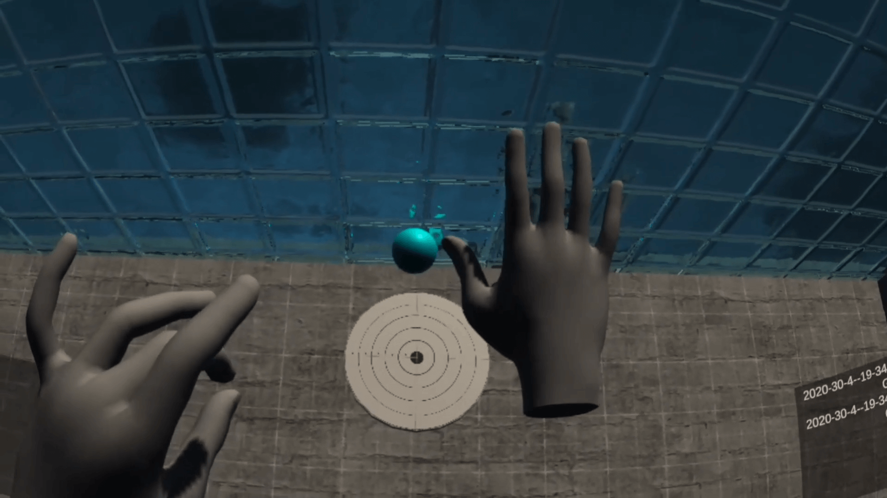
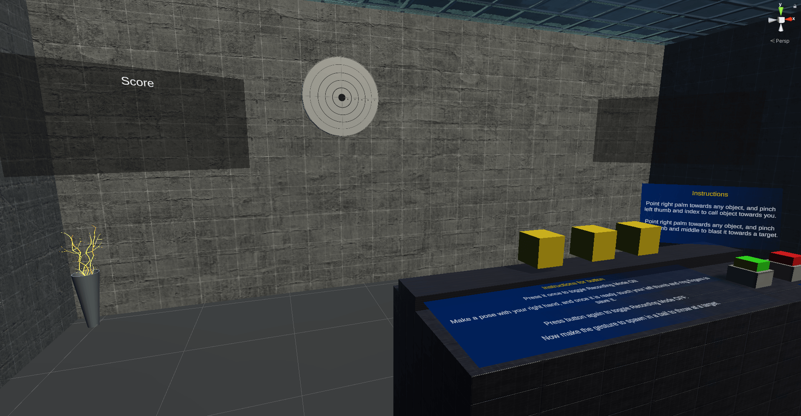

This virtual reality project was made for my Masters thesis at Purdue University. Everything (except the 3D models) was made from scratch. The basic idea was to develop a system that could quickly synthesize a multi-character scenario (which can be extrapolated to crowds), with each character having their own levels of "perceived negative emotion by the player" (a.k.a. affect). This project also demonstrated how to optimize this scenario, so that the algorithm can adjust itself towards a target "overall negative affect" of the scene.
Pictured above is the final setup of the characters - optimized for a target value of negative affect (emotion). The characters walk from these points to the player's position, as the player "walks" the street.
An example of a female character displaying "no-look at" and "look-at" behavior.
Each character came with proxemics logic (that enabled them to have a concept of personal space).
An example of the Markov Chain Monte Carlo method called Simulated Annealing.
Flowchart of the overall experiement.
TOPPLOTS
Unreal Engine | Oculus Quest
A virtual reality game I worked on for the CGT 555 (Game Development II) class, at Purdue University for my Masters. I fulfilled the role as a Creative Director and Level Designer (for 3 out of the 4 levels). This was also the start of Hammerand Studios - the starting point of having my own game development team. Topplots puts you in the shoes of a young child whose sole aim is to take down the towers of blocks in front of them, to get to the unique toys at the top of it. Take charge and gradually advance to locations that will take you on a wild journey fueled by the child's imagination. The images represent the levels I worked on.
Underworld (Level 3) - playspace in the middle is marked with the white and red mat.
Underworld (Level 3)- playspace in the middle is marked with the white and red mat.
Mole World (Level 2) - playspace is in the mesa in the middle.
Mole World (Level 2) - playspace is in the mesa in the middle.
The Mines (Level 1) - playspace is on the blue blueprint map.
The Mines (Level 1) - playspace is on the blue blueprint map.
Cabin in the Woods
Unreal Engine 4
A level design project, that primarily focuses on environment design. Primary goals were to work with foliage (LoD levels) and terrain design tools, as well as lighting scenarions. It also includes a log cabin, as well as smoke and fire particle effects. The First Person Shooter template of Unreal Engine has been used here, to allow the player to roam about, and experience the environment.
Natural vegetation is prevalent in this 4 KM x 4 KM world.
Rock formations were manually placed, and oriented.
The cabin is an Unreal Marketplace asset. The campfire includes particle effects and sound.
The aesthetic was made to mimic classic "lost in the forest" style games, that displayed themes of horror and solitary survivalism.
As you look into the woods, maybe something looks back?
Lost in Space
Unity
This virtual reality demo was created as a part of the edX course I did, entitled “Creating Virtual Reality Applications” (UCSanDiegoX:CSE190x). A major focus was to build a "one-button" system for virtual reality based environments. The application comprises of two parts - creation of game objects in a virtual room and manipulating them (along with existing objects in the scene). The user is able to freely create objects and them relocate, rotate, and scale them, using three different modes of locomotion - teleport, walk, and an automatic hover mode.
Diegetic menu for instantiating items, as well as basic object manipulation and traversal options.
The aesthetic has been designed to mimic a room floating in space. Inspired by the Tardis but more cozy.
All items in the level are rigidbodies, which enables the player to interact with them.
A minimap also exists to display a top down view of the room.
An object highlight feature is also implemented. If the raycast from the player detects a rigidbody with a custom tag, the algorithm applies a red overlay on top of it, to indicate context.
One of my first dives into virtual reality game development (2018). However, this was back when I did not have access to proper equipment, thus having to make this "one-button controller" simulation.
OASIS
Unreal Engine 4 | Quixel Megascans
A level design project created using assets from Quixel Megascans. The idea here was to generate a small settlement, surrounded by rocky mountains, in a desolate area. The main theme of the level design is to create a semi-fantasy based habitation area, and night time was chosen for aesthetic appeal.
A peaceful village called "Oasis" on the edge of an asteroid.
Main focus was to integrate Quixel Megascans assets into the world.
The level design was done by hand. The layout follows closely with a place I am very familiar with.
Landscape foliage was also used in this project.
Terrain manipulation and heightmaps were generated using World Machine.
To make the scene more interesting, a night scene was decided on. Along with that, the lamps are custom blueprints, and the trees have wind animations built in.
INVADER DEFENSE
OpenGL Shading Language
A project I made for my CGT521 course (Advanced Real-Time Graphics Programming). My primary focus was to understand the mechanics behind the design of video games without the help of a game engine, by recreating elements of a classic video game. Some of the fundamental concepts explored were keyboard inputs for gameplay, GLSL Shader coding, Non-Photorealistic Rendering (that function as power-up effects, collisions between elements, and basic fundamental game mechanics. I had fun doing the project and learnt a lot of new skills. It helped me understand the basics behind the OpenGL language, as well as shader programming.
A Brick-Breaker styled game, complete with customizable levels (in the form of characters in text files).
One of the levels consisting of unbreakable blocks and enemies. Each type of enemy when destroyed drops a power-up.
Death Screen.
Win screen.
Power-up 1 activated (Chaos mode - where the screen moves around changing perspective). An interesting by-product of this mode was the changed appearance of the enemies due to changing the shader buffers (which was a happy and unexpected accident).
Power-up 2 activated (Inversion - Turns the game upside down).
POSE RECOGNIZED HAND TRACKING
Unity | Oculus Quest
A project I made to test out developing an application that harnesses the power of hand tracking that is provided by Oculus Quest. A major focus of the application was to implement pose recognition. The user is able to set custom gestures, and spawn in objects, and interact with them. Some of the implemented features are custom pose setup, pose recognition, use gesture to "force call" objects towards player and "force blast" it away, physics interaction with environment elements (springs, rigidbodies, buttons etc.), and it all comes together in a minigame, where the player has to blast the ball towards a randomly generated target on the wall for points.
The room. The main player is an OVRCameraRig (which does not have any locomotion capabilities).

The tracked hands in game. This was done in the early days of the hand tracking SDK being released, thus for its time, it was fine. Occlusion and edge detection were the biggest problems back in the day.
Room view.
The player stood in front of physics accurate buttons, that could be used to record custom poses, and map them to custom functions.

There was also a minigame included where players could make objects float (using one hand sign) and then blast them towards a target to score points (using another hand sign).
Overall, it was really fun, and I think that the Oculus Quest has to be the most promising Virtual Reality device that was released in the past couple of years. I hope the developers (both for Oculus and us independents) keep supporting it with content for years.
Research Projects
Various
Contains projects, mechanics, prototypes, and simulations used for research publications and projects.
AI Patrol Agents for a game (used for a publication) that move between "n" checkpoints randomly to simulate enemy guard behavior. The agent also comes with a player detection zone (light blue zone using a sphere-overlap), to simulate enemy chase behavior.
Once the player enters the detection zone (light blue), the patrol agent notices the player and starts following it, overriding the checkpoint patrol behavior. The zone also turns black indicating that the player is seen, and the agent will follow with a slightly higher speed, until the player comes out of the detection zone.
Fully procedural seating generator. The user just needs to click on the generate button (and set the starter parameters on the left if they wish to) and everytime, a new form of sittable furniture will be generated.
One feature this algorithm also has is the edge (red blocks) and corner (yellow blocks without the grey pegs) detection abilities of the base, thus making it very versatile, and providing with the ability to generate any form of seats (from ottomans to sofas to barstools).
A pre-processor script that acts as a parser to convert comma-separated-value files into readable Unity inspector properties. No matter how big the dataset, the algorithm efficiently parses the data correctly, and organizes them into custom classes (Element 0, ELement 1 ...) with custom properties (Case no, IUCR, ...). In this case, the Chicago Crime (Homicide) dataset was used.
Using the previous CSV parser, a small game was developed that mapped all the points over approximately correct geographic locations (over a map image). The player could then click on each green "hotspot" and look into the details of the homicide that happened in that area.
Grid visibility detection script. The initial purpose was to use it in a project for a publication, where the level optimized the location of a treasure piece, based on several cost terms (one of which was "initial visibility of the player"). The tiles in red are the ones that detect the yellow treasure. Since it is inside a room (white blocks), the green tiles do not "see" it, thus implementing an effective visibility algorithm.
A slot machine simulator (Procedural Random Number generator) I made, to demonstrate the ill effects of gambling (and also to serve as a fidget satisfying tool). One of the main parameters I was investigating was whether the same levels of intrinsic motivation and enjoyment are achieved, even whene the monetary aspect of it is removed. Turns out, that similar levels are somewhat achieved, although I would need to do further investigation.
Developing a 3D environment of a bedroom for a game where the protagonist is a toy.
Back in the day I used to sketch to relax during my free time.